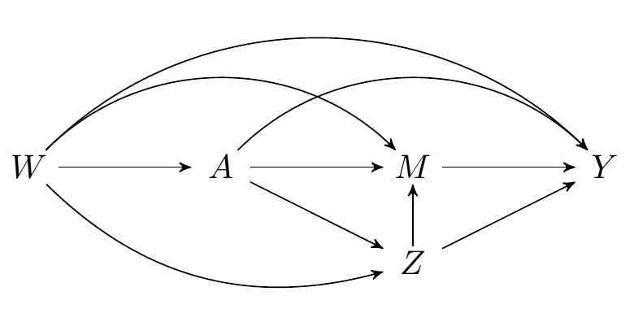

- The project is out-of-sync -- use `renv::status()` for details.
6 R packages for estimation of the causal (in)direct effects
We’ll now turn to working through a few examples of estimating the natural and interventional direct and indirect effects. Note that we will be using the medoutcon R package, which supports multiple mediators and a single binary intermediate confounder, but, if your data scenario includes multiple mediators and multiple intermediate confounders, you should consider using the HDmediation R package instead.
As our running example, we’ll use a simple data set from an observational study of the relationship between BMI and kids’ behavior, freely distributed with the mma R package on CRAN. First, let’s load the packages we’ll be using and set a seed; then, load this data set and take a quick look.
[1] 691 15Code
# A tibble: 567 × 15
bmi age sex race numpeople car gotosch snack tvhours cmpthours
<dbl> <dbl> <fct> <fct> <int> <int> <fct> <fct> <dbl> <dbl>
1 18.2 12.2 F OTHER 5 3 2 1 4 0
2 22.8 12.8 M OTHER 4 3 2 1 4 2
3 25.6 12.1 M OTHER 2 3 2 1 0 2
4 15.1 12.3 M OTHER 4 1 2 1 2 1
5 23.0 11.8 M OTHER 4 1 1 1 4 3
6 19.2 12.1 F OTHER 3 3 2 1 0 0
7 16.6 12.4 M OTHER 5 3 1 1 0 0
8 22.1 11.9 F OTHER 5 2 2 1 3 4
9 15.9 12.4 F OTHER 4 3 2 2 0 0
10 18.6 12.7 M OTHER 5 3 2 1 0 0
# ℹ 557 more rows
# ℹ 5 more variables: cellhours <dbl>, sports <fct>, exercises <int>,
# sweat <int>, overweigh <dbl>The documentation for the data set describes it as a “database obtained from the Louisiana State University Health Sciences Center, New Orleans, by Dr. Richard Scribner. He explored the relationship between BMI and kids’ behavior through a survey at children, teachers and parents in Grenada in 2014. This data set includes 691 observations and 15 variables.” Note that the data set contained several observations with missing values, which we removed above to simplify the demonstration of our analytic methods. In practice, we recommend instead using appropriate corrections (e.g., imputation, inverse weighting) to fully take advantage of the observed data.
Following the motivation of the original study, we focus on the causal effects of participating in a sports team (sports) on the BMI of children (bmi), taking into consideration several mediators (snack, exercises, overweigh); all other measured covariates are taken to be potential baseline confounders.
6.1 medoutcon: Natural and interventional (in)direct effects
The data on a single observational unit can be represented \(O = (W, A, M, Y)\), with the data pooled across all participants denoted \(O_1, \ldots, O_n\), for a of \(n\) i.i.d. observations of \(O\). Recall the DAG from an earlier chapter, which represents the data-generating process:
Code
\dimendef\prevdepth=0
\pgfdeclarelayer{background}
\pgfsetlayers{background,main}
\usetikzlibrary{arrows,positioning}
\tikzset{
>=stealth',
punkt/.style={
rectangle,
rounded corners,
draw=black, very thick,
text width=6.5em,
minimum height=2em,
text centered},
pil/.style={
->,
thick,
shorten <=2pt,
shorten >=2pt,}
}
\newcommand{\Vertex}[2]
{\node[minimum width=0.6cm,inner sep=0.05cm] (#2) at (#1) {$#2$};
}
\newcommand{\VertexR}[2]
{\node[rectangle, draw, minimum width=0.6cm,inner sep=0.05cm] (#2) at (#1) {$#2$};
}
\newcommand{\ArrowR}[3]
{ \begin{pgfonlayer}{background}
\draw[->,#3] (#1) to[bend right=30] (#2);
\end{pgfonlayer}
}
\newcommand{\ArrowL}[3]
{ \begin{pgfonlayer}{background}
\draw[->,#3] (#1) to[bend left=45] (#2);
\end{pgfonlayer}
}
\newcommand{\EdgeL}[3]
{ \begin{pgfonlayer}{background}
\draw[dashed,#3] (#1) to[bend right=-45] (#2);
\end{pgfonlayer}
}
\newcommand{\Arrow}[3]
{ \begin{pgfonlayer}{background}
\draw[->,#3] (#1) -- +(#2);
\end{pgfonlayer}
}
\begin{tikzpicture}
\Vertex{-4, 0}{W}
\Vertex{0, 0}{M}
\Vertex{-2, 0}{A}
\Vertex{2, 0}{Y}
\Arrow{W}{A}{black}
\Arrow{A}{M}{black}
\Arrow{M}{Y}{black}
\ArrowL{W}{Y}{black}
\ArrowL{A}{Y}{black}
\ArrowL{W}{M}{black}
\end{tikzpicture}
6.1.1 Natural (in)direct effects
To start, we will consider estimation of the natural direct and indirect effects, which, we recall, are defined as follows
\[ \E[Y_{1,M_1} - Y_{0,M_0}] = \underbrace{\E[Y_{\color{red}{1},\color{blue}{M_1}} - Y_{\color{red}{1},\color{blue}{M_0}}]}_{\text{natural indirect effect}} + \underbrace{\E[Y_{\color{blue}{1},\color{red}{M_0}} - Y_{\color{blue}{0},\color{red}{M_0}}]}_{\text{natural direct effect}}. \]
- Our
medoutconRpackage (Hejazi, Dı́az, and Rudolph 2022; Hejazi, Rudolph, and Dı́az 2022), which accompanies Dı́az et al. (2020), implements one-step and TML estimators of both the natural and interventional (in)direct effects. - Both types of estimators are capable of accommodating flexible modeling strategies (e.g., ensemble machine learning) for the initial estimation of nuisance parameters.
- The
medoutconRpackage uses cross-validation in initial estimation: this results in cross-validated (or “cross-fitted”) one-step and TML estimators (Klaassen 1987; Zheng and van der Laan 2011; Chernozhukov et al. 2018), which exhibit greater robustness than their non-sample-splitting analogs. - To this end,
medoutconintegrates with thesl3Rpackage (Coyle et al. 2022), which is extensively documented in this book chapter (Phillips 2022; van der Laan et al. 2022).
Dı́az, Iván, Nima S Hejazi, Kara E Rudolph, and Mark J van der Laan. 2020. “Non-Parametric Efficient Causal Mediation with Intermediate Confounders.” Biometrika. https://doi.org/10.1093/biomet/asaa085.
Klaassen, Chris AJ. 1987. “Consistent Estimation of the Influence Function of Locally Asymptotically Linear Estimators.” The Annals of Statistics, 1548–62.
Zheng, Wenjing, and Mark J van der Laan. 2011. “Cross-Validated Targeted Minimum-Loss-Based Estimation.” In Targeted Learning, 459–74. Springer.
Chernozhukov, Victor, Denis Chetverikov, Mert Demirer, Esther Duflo, Christian Hansen, Whitney Newey, and James Robins. 2018. “Double/Debiased Machine Learning for Treatment and Structural Parameters.” The Econometrics Journal 21 (1). https://doi.org/10.1111/ectj.12097.
Phillips, Rachael V. 2022. “Super (Machine) Learning.” In Targeted Learning in
R: Causal Data Science with the tlverse Software Ecosystem. Springer. https://tlverse.org/tlverse-handbook/sl3.html.
van der Laan, Mark J, Jeremy R Coyle, Nima S Hejazi, Ivana Malenica, Rachael V Phillips, and Alan E Hubbard. 2022. Targeted Learning in
R: Causal Data Science with the tlverse Software Ecosystem. CRC Press. https://tlverse.org/tlverse-handbook.
6.1.2 Interlude: sl3 for nuisance parameter estimation
To fully take advantage of the one-step and TML estimators, we’d like to rely on flexible, data adaptive strategies for nuisance parameter estimation.
Doing so minimizes opportunities for model misspecification to compromise our analytic conclusions.
Choosing among the diversity of available machine learning algorithms can be challenging, so we recommend using the Super Learner algorithm for ensemble machine learning (van der Laan, Polley, and Hubbard 2007), which is implemented in the
sl3R package (Coyle et al. 2022).-
Below, we demonstrate the construction of an ensemble learner based on a limited library of algorithms, including n intercept model, a main terms GLM, Lasso (\(\ell_1\)-penalized) regression, and random forest (
ranger).Code
# instantiate learners mean_lrnr <- Lrnr_mean$new() fglm_lrnr <- Lrnr_glm_fast$new() lasso_lrnr <- Lrnr_glmnet$new(alpha = 1, nfolds = 3) rf_lrnr <- Lrnr_ranger$new(num.trees = 200) # create learner library and instantiate super learner ensemble lrnr_lib <- Stack$new(mean_lrnr, fglm_lrnr, lasso_lrnr, rf_lrnr) sl_lrnr <- Lrnr_sl$new(learners = lrnr_lib, metalearner = Lrnr_nnls$new()) Of course, there are many alternatives for learning algorithms to be included in such a modeling library. Feel free to explore!
van der Laan, Mark J, Eric C Polley, and Alan E Hubbard. 2007. “Super Learner.” Statistical Applications in Genetics and Molecular Biology 6 (1).
Coyle, Jeremy R, Nima S Hejazi, Ivana Malenica, Rachael V Phillips, and Oleg Sofrygin. 2022. sl3: Modern Pipelines for Machine Learning and Super Learning. https://github.com/tlverse/sl3. https://doi.org/10.5281/zenodo.1342293.
6.1.3 Efficient estimation of the natural (in)direct effects
-
Estimation of the natural direct and indirect effects requires estimation of a few nuisance parameters. Recall that these are
- \(g(a\mid w)\), which denotes \(\P(A=a \mid W=w)\)
- \(h(a\mid m, w)\), which denotes \(\P(A=a \mid M=m, W=w)\)
- \(b(a, m, w)\), which denotes \(\E(Y \mid A=a, M=m, W=w)\)
While we recommend the use of Super Learning, we opt to instead estimate all nuisance parameters with Lasso regression below (to save computational time).
-
Now, let’s use the
medoutcon()function to estimate the natural direct effect:Code
# compute one-step estimate of the natural direct effect nde_onestep <- medoutcon( W = weight_behavior[, c("age", "sex", "race", "tvhours")], A = (as.numeric(weight_behavior$sports) - 1), Z = NULL, M = weight_behavior[, c("snack", "exercises", "overweigh")], Y = weight_behavior$bmi, g_learners = lasso_lrnr, h_learners = lasso_lrnr, b_learners = lasso_lrnr, effect = "direct", estimator = "onestep", estimator_args = list(cv_folds = 5) ) summary(nde_onestep)# A tibble: 1 × 7 lwr_ci param_est upr_ci var_est eif_mean estimator param <dbl> <dbl> <dbl> <dbl> <dbl> <chr> <chr> 1 -0.388 0.249 0.886 0.106 -6.03e-16 onestep direct_natural We can similarly call
medoutcon()to estimate the natural indirect effect:
Code
# compute one-step estimate of the natural indirect effect
nie_onestep <- medoutcon(
W = weight_behavior[, c("age", "sex", "race", "tvhours")],
A = (as.numeric(weight_behavior$sports) - 1),
Z = NULL,
M = weight_behavior[, c("snack", "exercises", "overweigh")],
Y = weight_behavior$bmi,
g_learners = lasso_lrnr,
h_learners = lasso_lrnr,
b_learners = lasso_lrnr,
effect = "indirect",
estimator = "onestep",
estimator_args = list(cv_folds = 5)
)
summary(nie_onestep)# A tibble: 1 × 7
lwr_ci param_est upr_ci var_est eif_mean estimator param
<dbl> <dbl> <dbl> <dbl> <dbl> <chr> <chr>
1 0.507 1.07 1.63 0.0823 3.10e-15 onestep indirect_natural- From the above, we can conclude that the effect of participation on a sports team on BMI is primarily mediated by the variables
snack,exercises, andoverweigh, as the natural indirect effect is several times larger than the natural direct effect. - Note that we could have instead used the TML estimators, which have improved finite-sample performance, instead of the one-step estimators. Doing this is as simple as setting the
estimator = "tmle"in the relevant argument.
6.1.4 Interventional (in)direct effects
Since our knowledge of the system under study is incomplete, we might worry that one (or more) of the measured variables are not mediators, but, in fact, intermediate confounders affected by treatment. While the natural (in)direct effects are not identified in this setting, their interventional (in)direct counterparts are, as we saw in an earlier section. Recall that both types of effects are defined by static interventions on the treatment. The interventional effects are distinguished by their use of a stochastic intervention on the mediator to aid in their identification.
Code
\dimendef\prevdepth=0
\pgfdeclarelayer{background}
\pgfsetlayers{background,main}
\usetikzlibrary{arrows,positioning}
\tikzset{
>=stealth',
punkt/.style={
rectangle,
rounded corners,
draw=black, very thick,
text width=6.5em,
minimum height=2em,
text centered},
pil/.style={
->,
thick,
shorten <=2pt,
shorten >=2pt,}
}
\newcommand{\Vertex}[2]
{\node[minimum width=0.6cm,inner sep=0.05cm] (#2) at (#1) {$#2$};
}
\newcommand{\VertexR}[2]
{\node[rectangle, draw, minimum width=0.6cm,inner sep=0.05cm] (#2) at (#1) {$#2$};
}
\newcommand{\ArrowR}[3]
{ \begin{pgfonlayer}{background}
\draw[->,#3] (#1) to[bend right=30] (#2);
\end{pgfonlayer}
}
\newcommand{\ArrowL}[3]
{ \begin{pgfonlayer}{background}
\draw[->,#3] (#1) to[bend left=45] (#2);
\end{pgfonlayer}
}
\newcommand{\EdgeL}[3]
{ \begin{pgfonlayer}{background}
\draw[dashed,#3] (#1) to[bend right=-45] (#2);
\end{pgfonlayer}
}
\newcommand{\Arrow}[3]
{ \begin{pgfonlayer}{background}
\draw[->,#3] (#1) -- +(#2);
\end{pgfonlayer}
}
\begin{tikzpicture}
\Vertex{0, -1}{Z}
\Vertex{-4, 0}{W}
\Vertex{0, 0}{M}
\Vertex{-2, 0}{A}
\Vertex{2, 0}{Y}
\ArrowR{W}{Z}{black}
\Arrow{Z}{M}{black}
\Arrow{W}{A}{black}
\Arrow{A}{M}{black}
\Arrow{M}{Y}{black}
\Arrow{A}{Z}{black}
\Arrow{Z}{Y}{black}
\ArrowL{W}{Y}{black}
\ArrowL{A}{Y}{black}
\ArrowL{W}{M}{black}
\end{tikzpicture}
Recall that the interventional (in)direct effects are defined via the decomposition:
\[ \E[Y_{1,G_1} - Y_{0,G_0}] = \underbrace{\E[Y_{\color{red}{1},\color{blue}{G_1}} - Y_{\color{red}{1},\color{blue}{G_0}}]}_{\text{interventional indirect effect}} + \underbrace{\E[Y_{\color{blue}{1},\color{red}{G_0}} - Y_{\color{blue}{0},\color{red}{G_0}}]}_{\text{interventional direct effect}} \]
- In our data example, we’ll consider the eating of snacks as a potential intermediate confounder, since one might reasonably hypothesize that participation on a sports team might subsequently affect snacking, which then could affect mediators like the amount of exercises and overweight status.
- The interventional direct and indirect effects may also be easily estimated with the
medoutconRpackage (Hejazi, Dı́az, and Rudolph 2022; Hejazi, Rudolph, and Dı́az 2022). - Just as for the natural (in)direct effects,
medoutconimplements cross-validated one-step and TML estimators of the interventional effects.
Hejazi, Nima S, Iván Dı́az, and Kara E Rudolph. 2022. “medoutcon: Efficient Natural and Interventional Causal Mediation Analysis.” https://doi.org/10.5281/zenodo.5809519.
Hejazi, Nima S, Kara E Rudolph, and Iván Dı́az. 2022. “medoutcon: Nonparametric Efficient Causal Mediation Analysis with Machine Learning in R.” Journal of Open Source Software. https://doi.org/10.21105/joss.03979.
6.1.5 Efficient estimation of the interventional (in)direct effects
-
Estimation of these effects is more complex, so a few additional nuisance parameters arise when expressing the (more general) EIF for these effects:
- \(q(z \mid a, w)\), the conditional density of the intermediate confounders, conditional only on treatment and baseline covariates;
- \(r(z \mid a, m, w)\), the conditional density of the intermediate confounders, conditional on mediators, treatment, and baseline covariates.
To estimate the interventional effects, we only need to set the argument
Zofmedoutconto a value other thanNULL.Note that the implementation in
medoutconis currently limited to settings with only binary intermediate confounders, i.e., \(Z \in \{0, 1\}\).-
Let’s use
medoutcon()to estimate the interventional direct effect:Code
# compute one-step estimate of the interventional direct effect interv_de_onestep <- medoutcon( W = weight_behavior[, c("age", "sex", "race", "tvhours")], A = (as.numeric(weight_behavior$sports) - 1), Z = (as.numeric(weight_behavior$snack) - 1), M = weight_behavior[, c("exercises", "overweigh")], Y = weight_behavior$bmi, g_learners = lasso_lrnr, h_learners = lasso_lrnr, b_learners = lasso_lrnr, effect = "direct", estimator = "onestep", estimator_args = list(cv_folds = 5) ) summary(interv_de_onestep)# A tibble: 1 × 7 lwr_ci param_est upr_ci var_est eif_mean estimator param <dbl> <dbl> <dbl> <dbl> <dbl> <chr> <chr> 1 -0.362 0.0921 0.547 0.0538 -4.06e-16 onestep direct_interventional -
We can similarly estimate the interventional indirect effect:
Code
# compute one-step estimate of the interventional indirect effect interv_ie_onestep <- medoutcon( W = weight_behavior[, c("age", "sex", "race", "tvhours")], A = (as.numeric(weight_behavior$sports) - 1), Z = (as.numeric(weight_behavior$snack) - 1), M = weight_behavior[, c("exercises", "overweigh")], Y = weight_behavior$bmi, g_learners = lasso_lrnr, h_learners = lasso_lrnr, b_learners = lasso_lrnr, effect = "indirect", estimator = "onestep", estimator_args = list(cv_folds = 5) ) summary(interv_ie_onestep)# A tibble: 1 × 7 lwr_ci param_est upr_ci var_est eif_mean estimator param <dbl> <dbl> <dbl> <dbl> <dbl> <chr> <chr> 1 0.413 0.992 1.57 0.0872 -1.24e-15 onestep indirect_interventional From the above, we can conclude that the effect of participation on a sports team on BMI is largely through the interventional indirect effect (i.e., through the pathways involving the mediating variables) rather than via its direct effect.
Just as before, we could have instead used the TML estimators, instead of the one-step estimators. Doing this is as simple as setting the
estimator = "tmle"in the relevant argument.